Welcome to St George Malankara Orthdox Church Richmond VA
We are dedicated to guiding individuals towards an encounter with the transformative power of God. Our aspiration for each individual is to have a meaningful moment in the presence of God. Regardless of your background or previous church involvement, we extend a warm welcome to you.
Connect With Us
Discover Your Spiritual Home
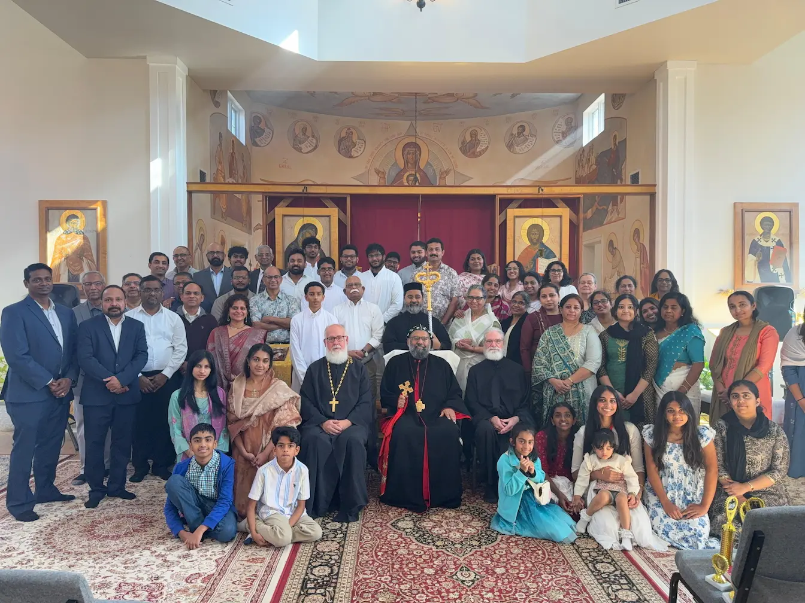
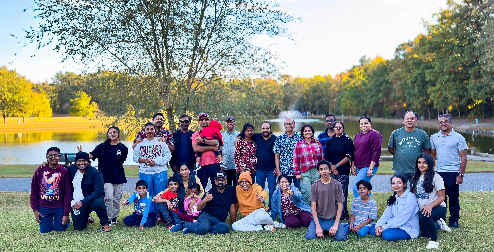
Our Story at St George
Congregation Established / Founding
Began as a congregation. The first service was held at St. John's United Church of Christ, led by Rev. Fr. Laby George in the presence of Rev Fr. George Mathew (Benny Achen).
Approved by Metropolitan Mathews Mar Barnabas. Mr. George P Thomas and Mr. Mathew Chacko were instrumental in coordinating the first service.
Regular Worship & New Location
Initial monthly services became regular.
Services were held at Westampton United Methodist Church (Location for 2014-2022), mostly led by Rev. Fr. George Mathew (Benny Achen).
Sunday School Begins
The Sunday school program was initiated. Rajan George served as the Sunday school principal at that time.
COVID-19 Pause & Organization
Services were paused due to the COVID-19 pandemic.
The group used this time to organize and formalize its structure.
Non-profit Registration
The group officially registered as the non-profit "St. George Malankara Orthodox Church of Richmond".
The elected team included:
- President: Fr. George Mathew (Benny Achen)
- Vice President: Varughese Mathew
- Secretary: Bobby Mathews
- Treasurer: Baiju Cherian
It also runs a regular Sunday School and a Choir.
Increased Services & New Church Home
The location was moved to St. Cyprian Orthodox Church.
Church services increased to twice a month.
Celebrated holy week and Christmas programs
Raising the status to Parish
His Grace Zachariah Mar Nicholovos, Metropolitan of the Northeast American Diocese, visited the congregation and granted approval to elevate the status of St. George Malankara Orthodox Church of Richmond from a Congregation to a Parish.
The first elected team included:
- President: Fr. Labby George
- Secretary: Sajeev Chandy
- Treasurer: Deepak Thannikkal Paul
Worship Services & Community Events
Church Calendar
Our Church Community in Pictures
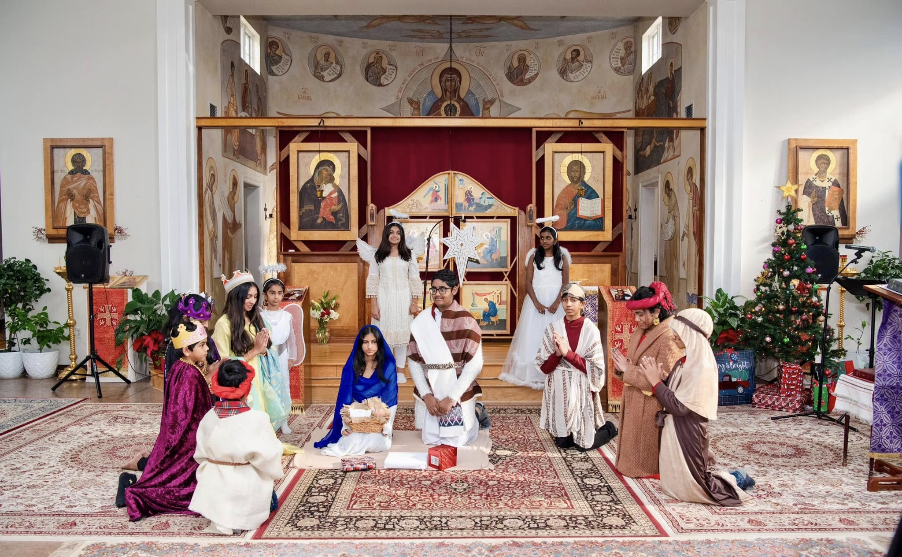
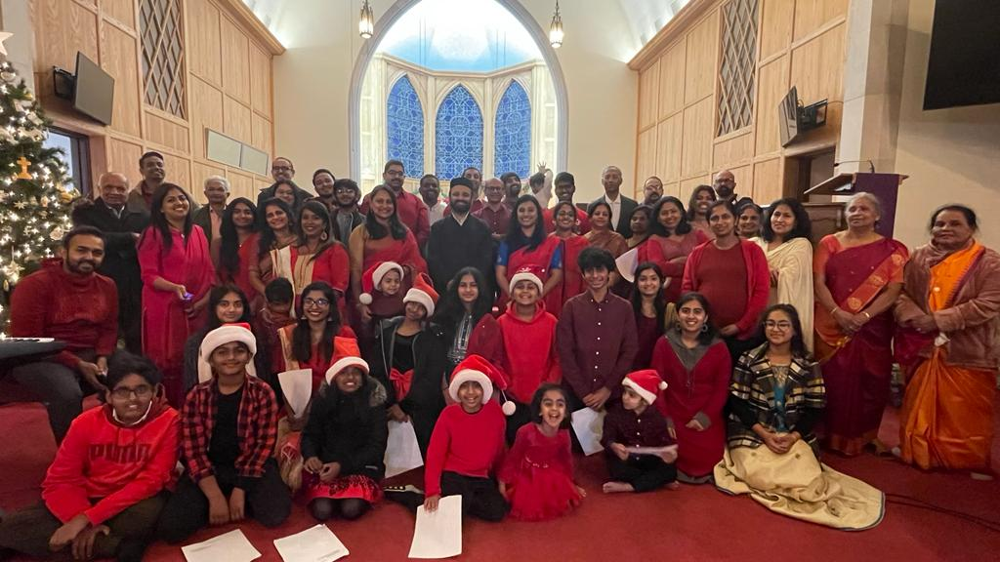
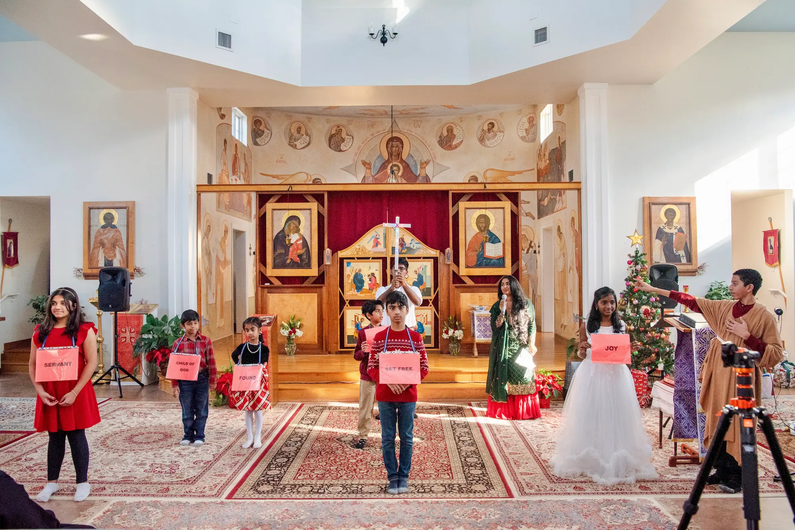
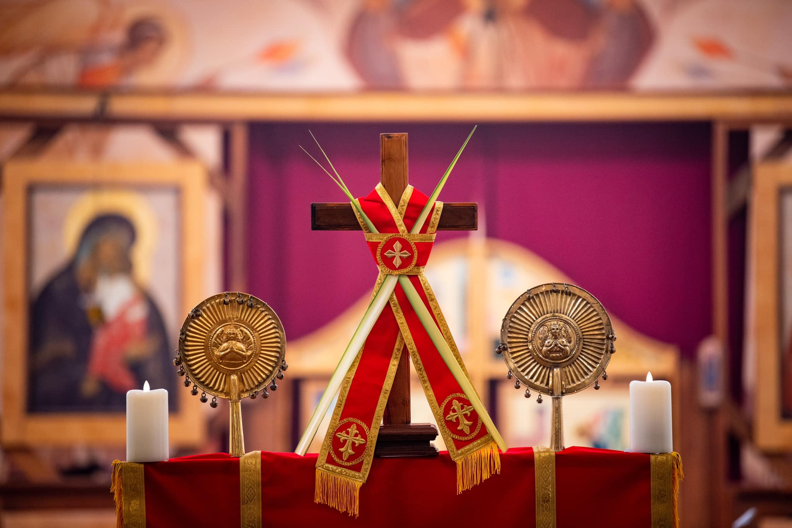
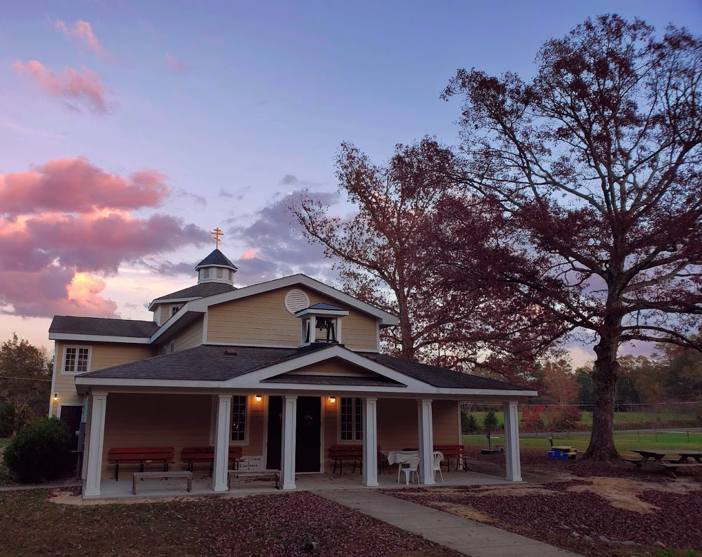
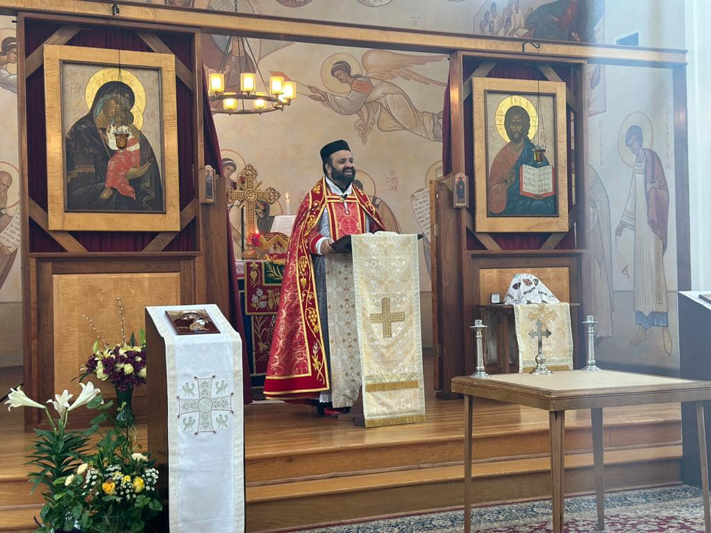
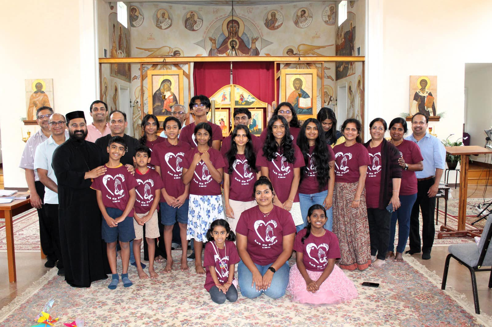
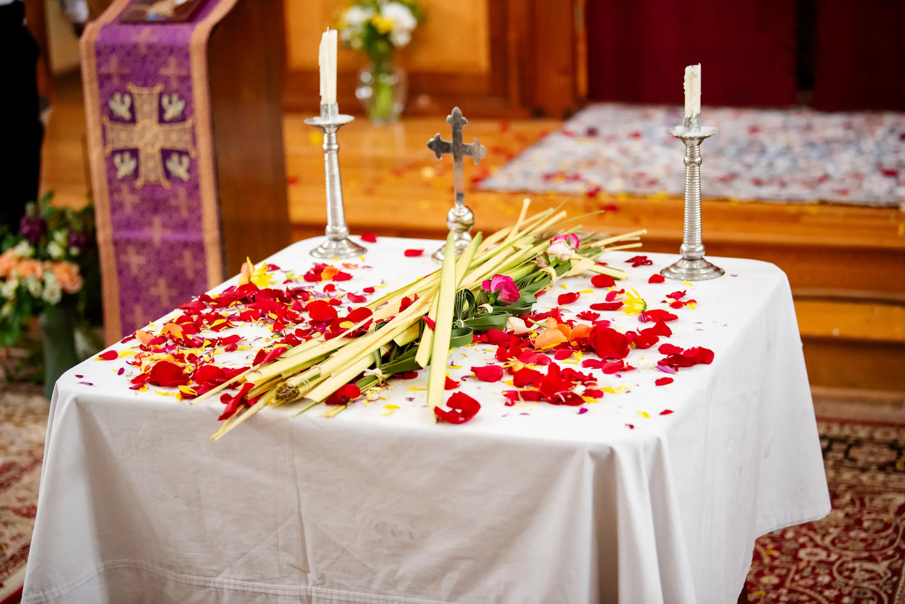
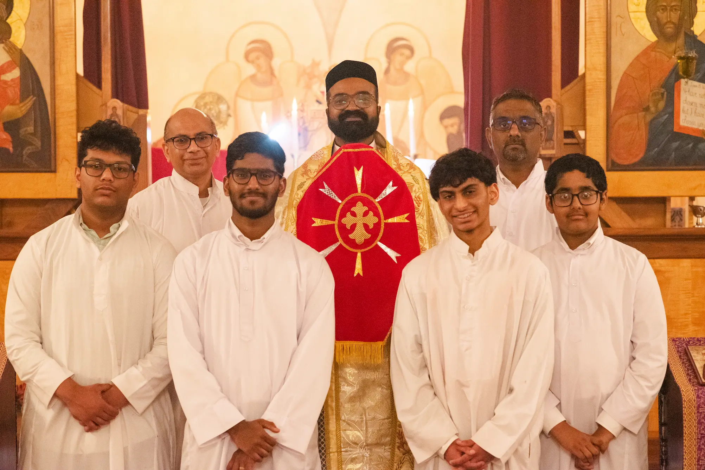
Helpful Links & Spiritual Resources
- Northeast American Diocese Our parent diocese official website
- Malankara Orthodox Church Official website of the Indian Orthodox Church
- Full Passion Week Liturgy Holy Week prayers, liturgies, and worship materials
- Holy Qurbana Liturgy Holy Qurbana Liturgy
- Song Book Comprehensive Song Book
- Our Facebook Page Stay updated with latest news and events
- WhatsApp Community Join our community chat for daily updates
- MGOCSM Mar Gregorios Orthodox Christian Student Movement
- OCYM Orthodox Christian Youth Movement
- Parish Membership Form Parish Membership Form for the new members
We Believe God is Transforming Our Community!
Worship Address
2570 Huguenot Springs Rd, Midlothian, VA 23113.
Phone :
804 244 5303
Email :
contact@stgeorgerva.org
Vicar :vicar@stgeorgerva.org